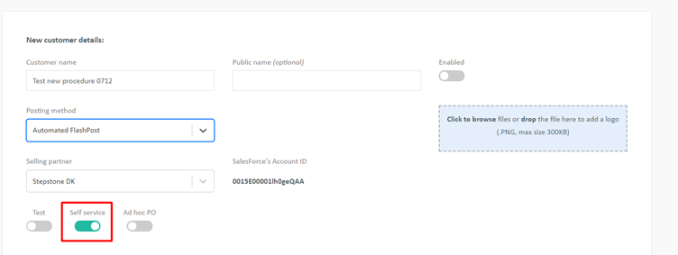
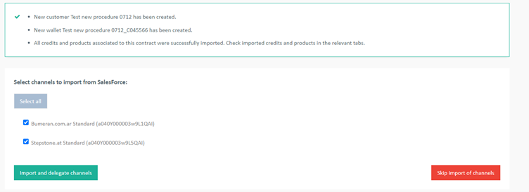

Creating a new Self-Service customer on behalf of the partner
This process allows you, as an admin to allow partners requesting the usage of the basic posting form for customers with more than 10 credits (any types of credits, including GFP). If the customer purchased less than 10 credits per CP they should proceed with the import themselves by logging in as a partner.
For local credits:
If you allow to use Self-Service for more than 10 credits, go to Salesforce and change the 'posting method' field of the CP into 'Self-Service'; once done, the partner will be able to import this customer (or add this CP to an existing SS customer) himself
IMPORTANT: this is only possible for NON-USED CPs; if there is a used CP, go to the procedure about GFP credits)
For GFP credits:
- If you allow to use Self-Service for GFP credits, go to Salesforce and ensure that the 'posting method' is 'FlashPost Regular'
- In FP, from the customers tab, click on the 'Import' button
- Enter the contract ID
- If the contract is valid and that the customer doesn't already exist, you should reach the customer creation page. Provide all required information and enable the 'self-service' toggle button (also enable the customer) 
- Save the customer
- Select channels which need to be imported and click on 'Import and delegate' channel 
- Check channels (email overwrite in case of fully automated partners) and wallet (a "Salesforce imported and monthly PO enabled" wallet ) which were automatically created.
IMPORTANT: If this process was used for importing partially used CP with local jobs, the partner still needs to create a PO for the remaining credits as local jobs will not be part of the monthly PO! In case there are only LOCAL jobs in the wallet, you should change the wallet type into 'Self-Service' for further upsells